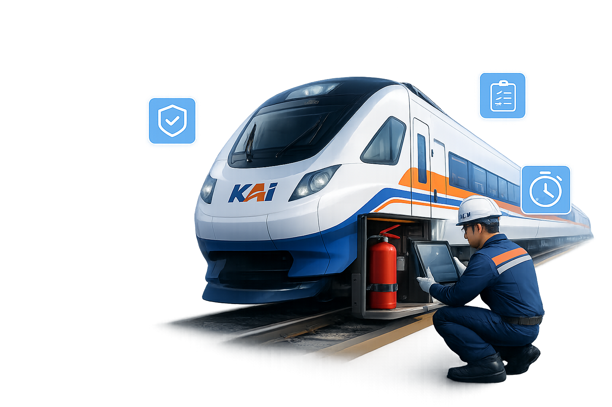

Platform digital terintegrasi untuk monitoring, pencatatan, dan manajemen pemeriksaan Alat Pemadam Api Ringan (APAR) di seluruh lingkungan operasional PT KAI — cepat, akurat, dan terdokumentasi.

Data terkini kondisi Alat Pemadam Api Ringan di seluruh lingkungan operasional PT KAI
Kemudahan dalam memantau dan mengelola pemeriksaan APAR di seluruh lingkungan PT KAI
Lakukan pencatatan pemeriksaan APAR secara digital tanpa formulir kertas. Data tersimpan aman dan terpusat.
DigitalisasiSistem mengirimkan notifikasi jadwal pemeriksaan berkala dan masa berlaku APAR yang akan habis.
OtomatisLaporkan APAR rusak atau tidak layak pakai secara langsung. Tim K3 akan mendapat notifikasi tindak lanjut.
ResponsifEkspor data pemeriksaan ke format Excel atau PDF untuk kebutuhan pelaporan dan dokumentasi.
ProduktivitasPantau kondisi APAR berdasarkan DAOP, stasiun, atau lokasi spesifik dengan tampilan yang terstruktur.
TerstrukturAkses sistem dari berbagai perangkat — desktop, tablet, maupun smartphone — kapan saja dan di mana saja.
FleksibelPantau area stasiun yang membutuhkan tindakan segera terkait ketersediaan APAR
Beberapa area stasiun memerlukan perhatian segera. Segera lakukan tindakan pengisian ulang atau penggantian APAR.
Ikuti alur sederhana berikut untuk melakukan pencatatan dan pelaporan pemeriksaan APAR melalui sistem
Masuk menggunakan akun petugas yang telah terdaftar di sistem monitoring APAR
Lakukan pengecekan fisik APAR dan dokumentasikan kondisi melalui formulir digital
Data pemeriksaan tersimpan otomatis ke server dan dapat diakses kapan saja
Export data ke Excel atau cetak laporan untuk dokumentasi dan pelaporan
Bergabunglah dengan ratusan petugas K3 di seluruh Indonesia yang telah menggunakan sistem inspeksi APAR digital PT KAI.
Daftar Sekarang